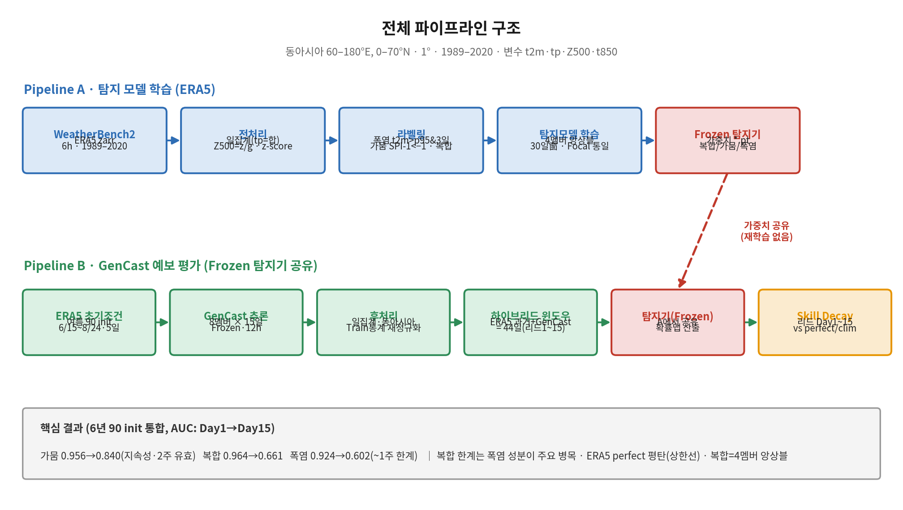
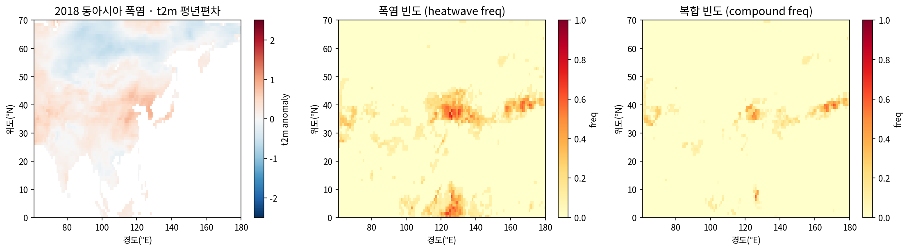
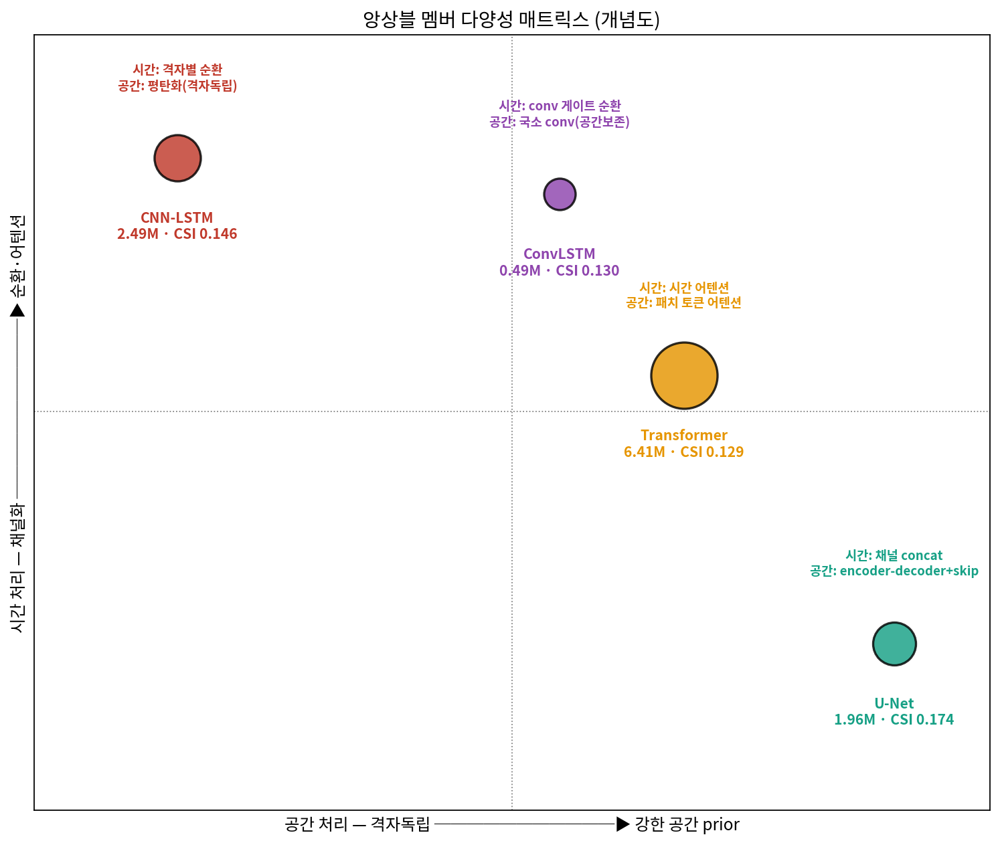
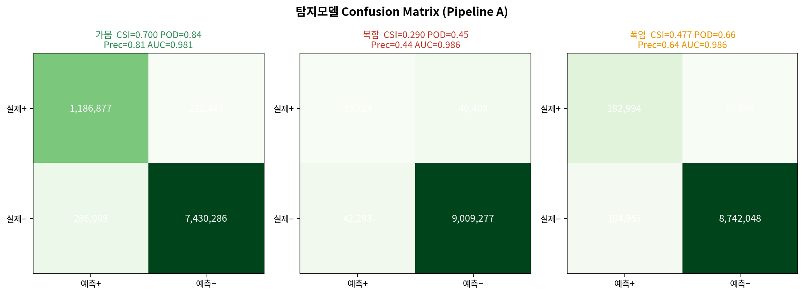
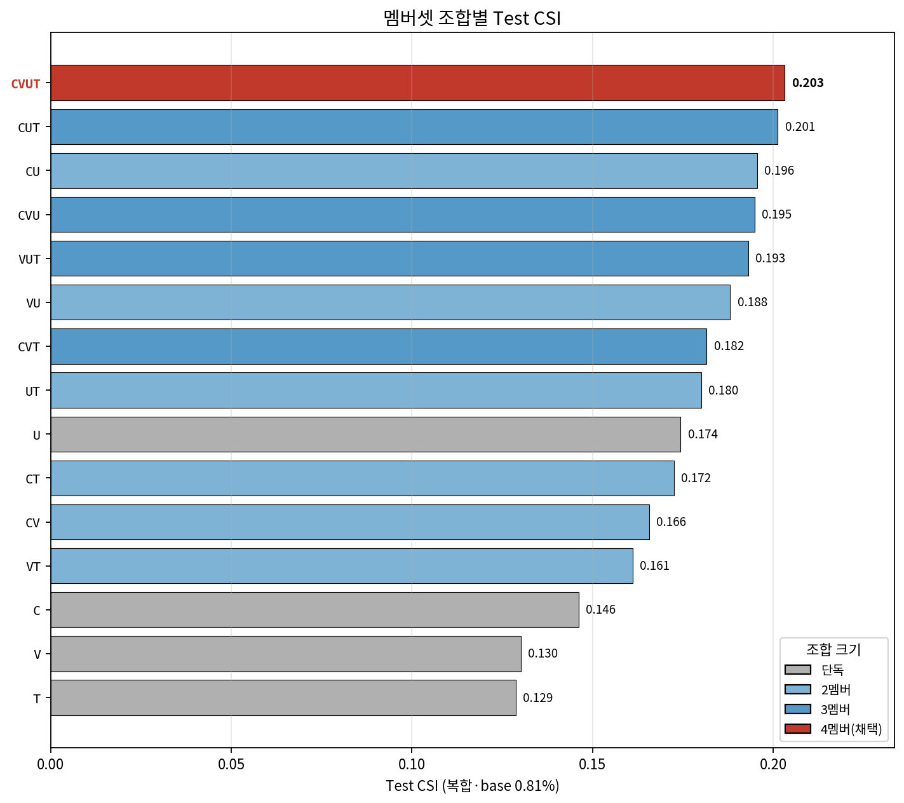
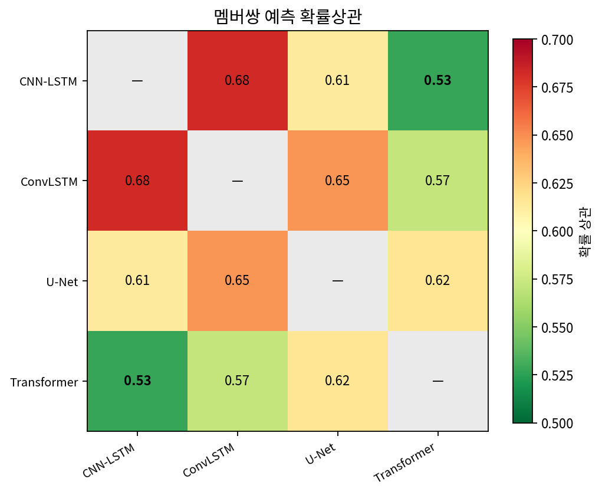
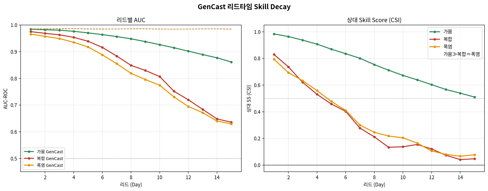
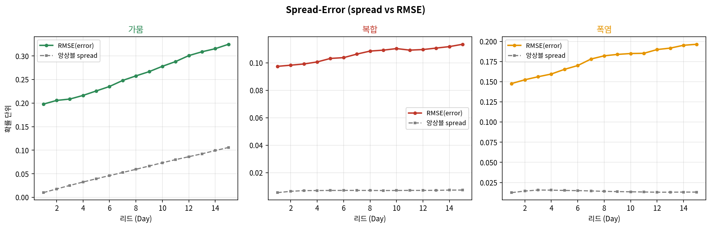
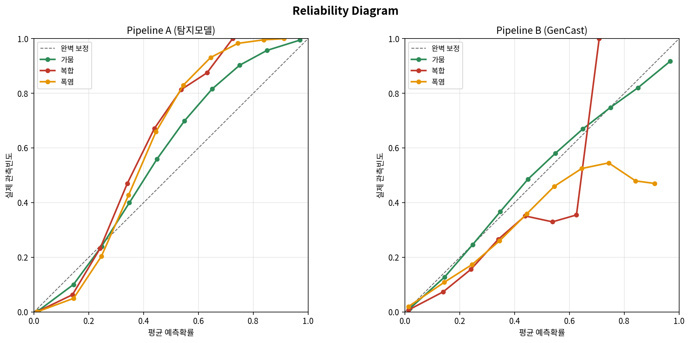

복합 극한기후(Hot-Dry) 탐지
+ GenCast 예보 평가
ERA5 학습 4멤버 앙상블 탐지기를 Frozen 잣대로 한
AI 기상예보의 사건 단위 리드타임 평가
연구 배경 — 복합 극한기후란
- 정의 — 폭염(고온) ∧ 가뭄(강수 부족)이 같은 시기·지역에 동시 발생
- 왜 더 위험한가 — 피해가 단순 합이 아니라 곱셈적으로 증폭
- 고온 → 증발산↑ → 토양 건조 → 지표 가열↑ 의 land–atmosphere 양의 되먹임
- 결과: 농업 수확 급감 · 산불 · 수자원 고갈 · 열사병 사망
- 실재성 — 2003 유럽, 2010 러시아, 2018 동아시아 폭염(한반도 관측사상 최악)
- 기후변화 맥락 — 온난화로 빈도·강도·지속 증가 (IPCC AR6가 별도 위험으로 강조)

선행연구 — 세 흐름과 미충족 공백
① 복합극한 기후과학기후
Zscheischler 2018 (Nat Clim Change) — compound event 정식 정의 / Mazdiyasni & AghaKouchak 2015 (PNAS) — 동시 가뭄·폭염 유의 증가
② 딥러닝 극한탐지방법
ClimateNet, Prabhat 2021 (GMD) — 휴리스틱 임계의 불일치 → 학습 기반 탐지로 일관성 확보
③ AI 수치예보평가대상
GenCast, Price 2025 (Nature) — diffusion 앙상블, 1320 타깃 중 97.2%에서 ECMWF ENS 능가
AI 예보가 hot-dry 복합극한을 며칠 리드까지 사건 단위로 재현하는가 — 동아시아에서 독립 학습·고정한 탐지기로 리드타임별 검증한 연구는 드물다.
평균장 지표(RMSE·ACC)는 tail/joint 사건을 평활할 수 있다.
접근 전략 — 탐지기를 "평가 잣대"로
- 핵심 아이디어 — 복합극한을 판정하는 탐지기(분류기)를 ERA5로 학습 → Frozen 잣대로 GenCast 평가
- 탐지(사건 판정) ≠ 예보(미래 생성) → 탐지기는 동아시아 한정 학습 정당
- 연구 질문
- ① 복합 hot-dry를 신뢰성 있게 탐지 가능한가
- ② GenCast는 며칠 리드까지 재현하는가
- ③ 성분(폭염·가뭄)별 재현력 차이는
- ④ 앙상블 불확실성(spread)은 신뢰할 만한가

데이터 — WeatherBench2 ERA5
- 소스 — WeatherBench2 ERA5 zarr (1° 보존적 regrid 완료, 6h)
- 영역 — 동아시아 60–180°E, 0–70°N → 71 × 120 격자, 1°×1°
- 기간 — 1989–2020 (32년) 일평균
- 분할(시간 기반·누수 방지)
- Train 1989–2009 / Val 2010–2014 / Test 2015–2020
폭염·복합 타깃은 t2m 평년편차(아노말리) 채널을 추가 → 5채널 (슬라이드 9)
라벨링 — 사건 판단 기준 (상대적 이상)
폭염 (heatwave)
그 격자·그 시기 p95 초과가 3일 연속 (doy ±7일 윈도우 → 계절·지역 편향 제거)
가뭄 (drought)
SPI-1 < −1 — 최근 30일 누적강수가 평년 대비 하위 ~16%. 월별 gamma 적합으로 계절중립
복합 (compound)
동일 격자·동일 날짜에 폭염 ∧ 가뭄 동시 충족 = 단기 compound hot-dry

라벨 검증 — 실제 사건과 대조
- 통계 보정 정확 — drought ≈ 15.7% ≈ 이론값 norm.cdf(−1)=15.9%
- 실제 사건 순서 일치 — 한반도 폭염빈도
- 2018 동아시아 폭염: 0.396 (관측사상 최악)
- 2016 동아시아 폭염: 0.202 → 2018 > 2016 실제와 일치
- SPI 계절중립 — 월별 가뭄비율 std 0.0013 (매우 낮음)

모델 — 4멤버 앙상블 (구조적 다양성)
① CNN-LSTM2.49M
공간 임베딩 후 격자별 시간 순환. 안정적 베이스라인.
② Transformer6.41M
8×8 패치 장거리 어텐션. 대규모 순환 포착, 과적합 취약.
③ ConvLSTM0.49M
시간 순환 중 conv로 공간 상호작용. 최경량 보완.
④ U-Net1.96M
픽셀별 세그멘테이션·skip. 희소 양성 위치 보존(단독 최강).

doy-아노말리 — 입력을 라벨 정의에 정렬
- 문제 — 폭염 라벨은 평년 대비(doy-p95) 기준인데, 입력 t2m은 전기간 z-score 절대 온도장
- → 입력과 라벨의 기후값 기준 불일치
- 해결 — t2m 평년편차(아노말리) 채널 추가
- anom = 물리 t2m − doy 기후값(±7일) · Train-only → 누수 없음
· 4월 평년 15℃ → +13℃ (이상고온 신호)
· 7월 평년 30℃ → −2℃ (정상)
모델이 계절 기후표를 스스로 복원하지 않고 평년편차를 직접 입력받음
doy-아노말리 효과 — 단일요인 통제 비교
| 지표 | 폭염 비-아노 | 폭염 아노 | 복합 비-아노 | 복합 아노 |
|---|---|---|---|---|
| CSI | 0.2985 | 0.4770 | 0.2031 | 0.2897 |
| Recall (POD) | 0.399 | 0.657 | 0.296 | 0.455 |
| AUC | 0.958 | 0.986 | 0.968 | 0.986 |
| PR-AUC ÷ base | 16× | 23× | 37× | 53× |
학습 프로토콜과 평가지표 원칙
- Focal Loss (α=0.25, γ=2.0) — 4멤버 통일
- 양성밀도 오버샘플 — 0.44% 양성 노출 확보
- warmup→cosine LR · 조기종료 · 해양 마스킹
- 희소사건에서 AUC-ROC는 관대 → 단독 "거의 완벽" 금지
- FPR 분모=음성 97% → 오탐 많아도 작게 보임
- 1차 = PR-AUC · PR-AUC÷base(lift)
- CSI·POD·Precision은 base rate·threshold 병기
- Pipeline B 결론·유효구간은 CSI 기반 상대 Skill Score (AUC는 순위능력 보조)
Pipeline A — 탐지 잣대 자체 성능

| 타깃 | CSI | AUC | POD | PR÷base |
|---|---|---|---|---|
| 가뭄 | 0.700 | 0.981 | 0.842 | ~6× |
| 폭염 | 0.477 | 0.986 | 0.657 | ~23× |
| 복합 | 0.290 | 0.986 | 0.455 | ~53× |
앙상블 멤버 선정 — 다양성이 이득의 원천


Pipeline B — 하이브리드 윈도우
- 문제 — 탐지기 윈도우 30일 vs GenCast 예보 15일 → 절대 비교 불가
- 하이브리드 — 30일 창 = ERA5 과거(30−d) + GenCast 미래(d)
- ERA5 29 + GenCast 15 = 44일 슬라이딩 → 리드 1~15 한 번에
- 리드 d = ERA5(30−d) + GenCast(d) · 리드15만 15:15
- 기준선 — perfect(ERA5·상한) · climatology(no-skill) · persistence(naive)
GenCast 원본 추론(여름 90 init 6/15~8/24 × 8멤버 × 15일)은 재실행 없이 후처리만으로 평가.
아노말리 채널은 하이브리드 윈도우에서 즉석 산출(저장 doy 기후값 재사용) — 저장본과 오차 0.0 검증.
리드타임 Skill Decay — 가뭄 ≫ 복합 ≈ 폭염

| 타깃 | AUC Day1→15 | 상대SS(CSI) Day1→15 | 유효 |
|---|---|---|---|
| 가뭄 | 0.985→0.862 | 0.98→0.51 | ~2주 |
| 복합 | 0.975→0.636 | 0.83→0.05 | ~1주 |
| 폭염 | 0.966→0.630 | 0.79→0.08 | ~1주 |
GenCast 앙상블 — 심한 Under-dispersion(과신)


엄밀화 ① — 독립 연도 재확인
GenCast 학습기간 1979–2018 → 평가 2015–2020 중 2015–2018이 학습과 겹침
- 검증 — 학습기간 밖 2019–2020만 재평가
- 결론 — 전체 6년과 거의 동일 → 겹침이 결과 부풀리지 않음 입증 ✅
| 타깃 Day1 AUC | 2019–20 | 전체 6년 |
|---|---|---|
| 폭염 | 0.965 | 0.966 |
| 복합 | 0.974 | 0.975 |
| 가뭄 | 0.984 | 0.985 |
엄밀화 ② — Persistence Baseline (순기여 분리)
- 질문 — 가뭄 "2주 skill"이 GenCast 기여인가, 단순 지속성인가?
- 방법 — 미래를 직전 관측으로 hold한 naive 예보(persistence)와 비교
- GenCast 순기여 = (GenCast − persist)/(perfect − persist)
| 타깃 | persist AUC Day1→15 | GenCast 순기여 Day1 / Day5 / Day15 |
|---|---|---|
| 가뭄 | 0.980→0.799 | 0.73 / 0.71 / 0.34 |
| 복합 | 0.965→0.591 | 0.51 / 0.82 / 0.12 |
| 폭염 | 0.949→0.531 | 0.47 / 0.78 / 0.22 |
종합 결론
Pipeline A — 잣대 구축
입력을 라벨 정의에 정렬(doy-아노말리)해 폭염·복합 판별력 +60%/+43%, AUC 0.98의 신뢰성 잣대.
Pipeline B — 예보 평가
운용조건에서 GenCast는 가뭄 ~2주·폭염·복합 ~1주 유지. 앙상블은 과신(under-dispersion).
순기여 (persistence 대비)
가뭄은 상당부분 지속성, 폭염·복합은 GenCast가 naive를 진짜 능가 → 서열은 절대 AUC 기준, 순기여로는 격차 좁아짐.
방법론 기여
탐지기를 Frozen 잣대로 쓰는 사건 단위 리드타임 평가 프레임 — 평균장 지표가 놓치는 tail/joint 예측성 진단.
한계 — 정직한 서술 (과대포장 금지)
- 적용 범위 — 동아시아·1°·여름·Hot-Dry 전용 (범용 아님)
- 평가 대상 — "GenCast 입력 시 Frozen detector score와 ERA5 기준의 일치도" → 직접 예측성이 아님 (탐지기 편향 전파)
- 하이브리드 귀속 — 모든 리드가 ERA5 antecedent 포함 → persistence baseline으로 분해(완료)
- 극희소성 — 복합 Test base ~0.8% → 절대 CSI는 통계적으로 어렵다 (이론적 천장은 base rate 무관)
- 확률 보정 미적용 — GenCast under-dispersion calibration 향후 과제
- 라벨 기후정의 — 전기간 산출 = retrospective 평가 (모델 입력 통계는 Train-only)
핵심 기여와 향후 과제
동아시아 복합 극한기후를 직접 학습한 4멤버 앙상블 탐지기를 잣대로, 입력을 라벨 정의에 정렬해 판별력을 +60%/+43% 끌어올리고, persistence까지 비교한 정직한 리드타임 평가로 GenCast의 사건 단위 예측 한계와 순기여를 정량화했다.
- GenCast 확률 보정(calibration) 적용
- 복합 실패의 가뭄/폭염 성분 분해 (조건부 skill)
- 배포 — predict.py · 가중치 공개 · 재현성
참고문헌
- Zscheischler, J. et al. (2018). Future climate risk from compound events. Nature Climate Change, 8, 469–477.
- Mazdiyasni, O. & AghaKouchak, A. (2015). Substantial increase in concurrent droughts and heatwaves in the United States. PNAS, 112(37).
- Prabhat et al. (2021). ClimateNet: an expert-labeled open dataset and deep learning architecture for high-precision analyses of extreme weather. Geosci. Model Dev., 14, 107–124.
- Price, I. et al. (2025). Probabilistic weather forecasting with machine learning (GenCast). Nature. doi:10.1038/s41586-024-08252-9.
- Lin, T.-Y. et al. (2017). Focal Loss for Dense Object Detection. ICCV.
- IPCC (2021). AR6 WG1 SPM, Fig. SPM.3. · 외부 그림 출처: IPCC(R3) · UCAR(R7) 인용.